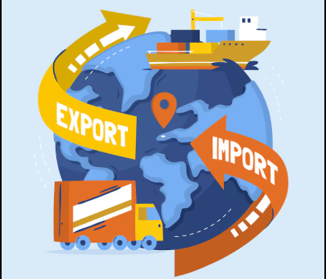

Lesson 6 - Patakarang Panlabas
- KALAKALANG PANLABAS
- -Palitan ng produkto at serbisyo sa pagitan ng mga bansa
- -Ito ay nagaganap sapagkat walang bansa ang maaaring makatugon sa lahat ng kanyang pangangailangan ng walang tulong mula sa ibang bansa.
- -Bilateral: 2 bansa (hal. U.S at PH), Bloc: Organisasyon at 1 bansa (hal. APEC at PH)
- -EKSPORT (Pagluluwas): pagpapadala ng mga produkto at serbisyo sa ibang bansa, IMPORT (Pag-aangkat): pagbili ng kalakal mula sa ibang bansa
- DAHILAN NG KALAKALANG PANLABAS
- 1.Pagkakaiba ng Teknolohiya
- 2.Pagkakaiba sa Pinagkukunang Yaman
- 3.Pagkakaiba sa Panlasa
- 4.Pagkakaiba sa Halaga ng Produksyon

PATAKARANG UMAAPEKTO SA KALAKALANG PANLABAS
- Taripa/Tariff:
- -Buwis sa mga produktong inaangkat
- -Nagpapataas ng presyo at nagpapababa ng benta ng inaangkat ng produkto
- -Nagpapataw ng mataas na taripa pang mapigil ang pagpasok ng dayuhang produktong kalaban ng lokal na produkto.
- Kota: (Quota)
- -Maaaring limitahan (kotahan) ang pagpasok ng mga kalabang produkto
- Subsidy:
- -Tulong na ibinibigay ng gobyerno upang bumaba ang halaga ng produksyon ng mga lokal na produkto.
BATAYAN NG KALAKALANG PANLABAS (David Ricardo)
- Absolute Advantage
- -Nakakalikha ng mas maraming bilang ng produkto gamit ang mas kaunting salik ng produksyon kumpara sa ibang bansa.
- Comparative Advantage
- -Ang bansa ay magkakaroon ng espesyalisasyon sa paglikha ng kalakal.
- -Kapag kaya ng bansa gawin ang kalakal ng mas efficient kumpara sa ibang bansa.
- -Hal. Cebu may comparative advantage sa pagluto ng Lechon
- BALANCE OF TRADE (BOT)
- -Kalagayan ng kabayaran ng pagluluwas (export) at sa pag-aangkat (import).
- -Trade Deficit: import > export, Trade Surplus: import < export
- KABUTIHAN NG PAKIKIPAGKALAKALAN
- -Mas maraming produkto ang mapagpipilian sa pamilihan.
- -Napapataas nito ang kalidad ng mga produkto na nabibili sa pamilihan
- -Nagkakaroon ng pagkakaunawaan ang mamamayan ng bansang nakikipagkalakalan.
- -Lumalawak ang pamilihan ng mga produkto sa bansa.
- DI- KABUTIHAN NG PAKIKIPAGKALAKALAN
- -Nagiging palaasa ang mga mamamayan sa produktong imported
- -Hindi nalilinang ang pagkamalikhain ng mga mamamayan dahil umaasa na lamang sila sa mga produktong gawa sa ibang bansa
- -Pagkawala ng sariling pagkakakilanlan bunga ng pagpasok ng dayuhang kultura sa lipunan
SAMAHANG PANDAIGDIGANG PANG-EKONOMIKO
- World Trade Organization
- -Pinasinayaan at nabuo noong Enero 1, 1995
- -Samahang namamahala sa pandaigdigang patakaran ng sistema ng kalakalan o global trading system sa pagitan ng mga kasaping estado o member states
- LAYUNIN-Pagsusulong ng maayos na kalakalan sa pamamagitan ng pagpapababa ng hadlang sa kalakalan (trade barriers)
- -Plataporma para sa negosasyon at tulong-teknikal sa developing countries.
- -Paggamit ng trade sanction sa mga kasaping hindi sumusunod sa desisyon ng samahan.
- Asia-Pacific Economic Council (APEC)
- -Isulong ang kaunlarang pang-ekonomiya at katiwasayan sa rehiyong Asia-Pacific
- -Itinatag noong Nobyembre 1989
- LAYUNIN-Liberalisasyon ng pakikipagkalakalan at pamumuhunan
- -Pagpapabilis at pagpapadali ng pagnenegosyo
- -Pagtutulungang pang-ekonomiya at teknikal
- Association of Southeast Asian Nations (ASEAN)
- -Paunlarin at isulong ang malayang kalakalan sa bawat kasapi ng ASEAN pati ang mga bansang dialogue partner nito.
- -Itinatag noong August 8, 1967
- LAYUNIN-Upang maging ganap ito, nabuo ang ASEAN Free Trade Area (AFTA) noong January 28, 1992, sa Singapore.
- -Nakabatay sa Common Effective Preferential Tariff (CEPT) na nag-aalis ng taripa at quota para sa mas malayang daloy ng produkto sa ASEAN.
PROGRAMANG NAGTATAGUYOD SA KALAKALANG PANLABAS
- Liberalisasyon sa Sektor ng Pagbabangko (R.A 7721)
- -Pinapayagan ang dayuhang bangko na magtayo at magpatakbo ng sangay sa bansa.
- Foreign Trade Services Corps (FTSC)
- -Nagtataguyod ng mga lokal na produkto sa pandaigdigang pamilihan sa pamamagitan ng iba't ibang estratehiya.
- Trade and Industry Information Center (TIIC)
- -Nangangalap at nagpapalaganap ng datos at impormasyon tungkol sa ekonomiya, kalakalan, at industriya, pamahalaan, at kapakanan ng mamimili.
- Center for Industrial Competitiveness
- -Naglulunsad ng mga programa at pagsasanay upang mapahusay ang kakayahan at produktibidad ng manggagawa.
< back to the AP home page